| 私はヒトラーの女だった？: 101歳まで生きたナチ映画の美人監督 アーティストラブ | |
| 角間貴生 | |
| yumelife studio (2014) | |
私はヒトラーの女だった？
（101歳まで生きたナチ映画の美人監督）
―アーティストラブ３―
著者 角間貴生（かくまたかお）
出版工房ゆめらいふ
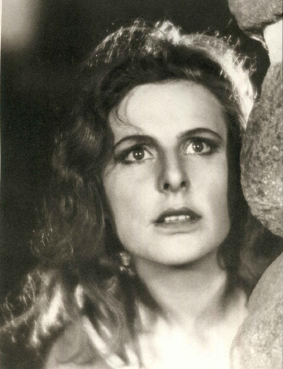
美人で才気あふれる若い映画監督レニ・リーフェンシュタールはヒトラーに、その才能を認められて、『信念の勝利』『意志の勝利』『オリンピア』などのナチ・プロパガンダ映画を作りました。
それらはナチスとアドルフ・ヒトラーのイメージ戦略にはあまりに見事な出来栄えの芸術作品でした。
第二次大戦でドイツが破れ、ヒトラーや周囲の親しい男や女たちが誰も無残に死んでいくなか、彼女だけは生き残りました。
戦後、彼女はナチ協力者として逮捕され、尋問、拘留され続けますが、独力で約50回の裁判に勝訴します。
やがて６０歳を越えてからカメラマンとして出発し、７１歳で写真集『ヌバ』を出版して世界に一大センセーションを巻き起こしました。
そして７２歳で潜水ライセンスを獲得するや、７８歳で水中写真集『コラル・ガーデンズ』、８８歳で『水中の驚異』を出版したのでした。
レ二・リーフェンシュタールはこうして不死鳥のように蘇り、１０１歳までアーティストを通したのです。
戦後、世間から『ヒトラーの女』だった過去を糾弾されると、自分はある時期ヒトラーを慕い、彼から全面的に支援されたが、自分には戦争責任はないと頑強に言い続けました。
この小説はレニとヒトラーの出会いや二人の逢引きの場面に至るまで、私が想像して書いたフィクションの物語です。
ところで、彼女には戦争責任はあったのでしょうか？ それとも、なかったのでしょうか？
それはこの小説を読んだあなたの判断しだいです。
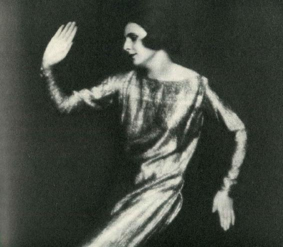
１華やかだった青春の日々
私はレニ・リーフェンシュタール。
私は当時急激に大都会へと変貌しつつあった、ドイツのベルリンで１９０２年に生まれました。
父アルフレートは換気装置や配管の会社を経営する実業家で、生活には何不自由ないブルジョワ家庭でした。
父が実業を重んじ保守的な権威主義者だったのと対照的に、母ベルタは子供の頃女優を夢見て果たせなかった事もあって、私の夢の実現には全面的な支脚援者になったのです。
私は子供の頃から活発で負けず嫌いな男の子のような娘で、ダンスや水泳に夢中でしたが、一方でおとぎ話に浸る夢想少女でもあったようです。
ある満月の夜に家の屋根に上り夢見心地になってしまって、いつまでも下りて来ないので、母親から引き下ろされた事もありました。
１６歳のある日偶然に、新聞で『阿片』という映画の募集記事を見つけて、応募したら何と合格でした。
これは２次審査まで通ったのですが主役になれない事が分かり、帰るつもりでした。
しかしその時、隣の部屋で女性たちがダンスの練習をしているのを見て、私は何としてでもダンスがやりたくなったのです。
それからは父に内緒で母にレッスン料を出してもらって、この学校で猛烈にダンスの練習を始めました。
そのうち、公演で主役ダンサーのアニタ・ベルバーが病気で出られなくなると、急遽、私が代役を務めて踊ることになったのです。
この時、私は見事なダンスをやってのけたので、公演は成功し大変な話題にもなりました。
噂を聞きつけた父は私が悪名高いベルバーの代役ダンサーと知って激怒し、私を無理やりハルツの寄宿学校に入れてしまいました。
私はそこの寄宿学校でも決して夢を諦める事はなく、ダンスと演劇の練習に明け暮れ、一年後に今度は父を自ら説得してベルリンの元の舞踊学校に入れてもらったのです。
こうして前衛ダンスに本格的に取り組むことになり私は猛烈に練習したのでした。
１９２３年の１０月にミュンヘン、ベルリンの舞台に立ち、新人デビューの成功を果たす事が出来ると、母親に付き添われながら、ドイツ各地を巡業して回りました。
当時、ドイツ国内は超インフレの破局的な状況にあったにも関わらず、私の舞踊はいつも好評で公演ごとに相当のギャラが入りました。
ついには、マックス・ライン・ハルトの「ドイツ劇場」の舞台で踊るようになっていました。
私はすでに有名なプロの前衛ダンサーになっていたのでした。
しかし、その人気絶頂の私に突然の不幸が訪れました。
チェコのプラハ公演で技巧的な跳躍をした時に、私の膝に激痛が走ったのです。
この膝の怪我はダンサーにとっては致命傷でした。
私はダンサーを断念せざるを得なくなったのです。
しかし、私はそれでもくじけませんでした。
傷心のままベルリンに帰った私は地下鉄のプラットホームで一枚の映画ポスターを見つけました。
アーノルド・ファンクの山岳映画『運命の山』のポスターでした。
私は「これだ！」と思い、映画館に駆け込んだのでした。
......山と雲。山の放牧地の傾斜が私の目の前にありました。私は未知の世界を見ていたのです。山がこんなに美しいとは思いませんでした。映画は美しさと妖しい力を放っていて、私は映画がまだ終わる前から、山岳映画についてもっと知りたいと思っていました。......
それからの私は同じ映画を一週間何度も見続けました。
そして私は是非ともこんな山岳映画に出演してみたいと考えたのです。
私には前衛ダンスで鍛え上げた身体とパフォーマーとしての自信があったからでした。
早速、私は映画の中にあるドロミテ山地のホテルまで出かけて行く決心をしました。
するとそこで主役のルイス・トレンカーに会う事が出来たのです。
私はその場で彼に言い放ちました。
「私は次の映画に共演します」
ルイス・トレンカーは目をまるくして私を見続けていました。
その後、ベルリンに戻った私は監督のアーノルド・ファンクに会うことも出来ました。
私は何としてでもあなたの次の映画に出演したいと言うと、ファンクは即座にOKしました。
彼は次の山岳映画『聖山』のヒロインを探しているところだったからです。
当時、ドイツでは山岳映画が流行していました。
こうして私は山岳映画女優に転身出来たのです。
『聖山』は内容が通俗でしたが、興行的には成功でした。
何といってもその山々の映像が美しく新鮮だったからです。
その後、ファンクの作った『大いなる跳躍』『死の銀嶺』『モンブランの嵐』などの映画のいずれにも私は出演していました。
アーノルド・ファンクの山岳映画は当時大変流行し、彼は国際的な成功を収めることになります。
しかし、よくよく考えてみると、映画の成功の多くはカメラマンたちが決死の覚悟で撮った雪山の映像とエルンスト・ウーデトが飛行機の曲芸飛行で撮影した映像の力によるもので、私はただスキーも出来て山にも登れる便利な美人女優でしかなかったのです。
私が本当にやりたい事は、自ら作品を作る事でした。
こうして女優に飽き足らなくなった私は、自ら脚本を書き、主演女優を演じ、監督として、新しい映画を作ることになったのです。
私は自分の映画を作るためなら、なりふり構いませんでした。
ファンク映画のメンバーからディレクターやカメラマンや男優などを引き抜きました。
私のフィアンセや愛人や元愛人たちなど、利用できるものなら何でも動員しました。
彼らは資金援助までも、喜んでやってくれたのです。
こうして私の人生を変えることになる映画『青の光』は完成しました。
私の映画監督としての第一作品でした。
私は脚本家、監督であると同時に、映画のヒロイン、ユンタでもあったのです。
......満月の夜に村の美しい娘ユンタに誘われて山に登った若者は必ず転落死すると言い伝えのある村がありました。その村にやって来た画家が、ある満月の夜、ユンタの後を追って断崖を登り青い光のある所に到着すると、そこは水晶でした。その後、画家は村人たちにその水晶の在り処を教えてしまったので、村人たちが総出で水晶を採り漁ってしまいます。空っぽになってしまった洞穴に絶望したユンタは山から転落し、画家は死体になったユンタを抱きしめるのでした。......
公開当時に「シネモンド」誌に載った批評は次のようなものでした。
「メルヘン的な映像がゆっくりと続く。そのすべてが絵画のように構成されていて、魔術的な光にひたされている。レ二・リーフェンシュタールの姿はその光の中で、たいへん美しく、山の妖精のように超自然的である。彼女自身の姿だけでも、この映画に、並みでない、人の心を打つ魅力を与えるには十分だろう。」
映画はロンドンやパリやニューヨークで、その大自然描写の見事さや斬新な映像テクニックが大絶賛されました。
そして、その年のベネチア映画祭で最高賞も獲得することになったのです。
これは私が何より心も身体もタフで、失敗を恐れず映像実験に挑戦したから出来たことなのでしょう。
ただ、正直言って映画撮影のロケは大変でした。
私をめぐって男たちが嫉妬しあったり、反目しあったりする事が度々あったからです。
でも私は男たちを上手にコントロールすることに長けていたようです。
私は２０歳頃に体験したいくつかの惨めで幻滅の恋愛から、恋愛や結婚に全てを賭けるような「女」ではありませんでした。
この頃からすでに男から必ず距離を置いて、男たちの愛をもてあそぶようなところがあったのかも知れません。
これは私が生涯を通して、恋愛や結婚において一般的な意味で幸せになれなかった大きな要因だった気もします。
いや、だからこそ生涯を賭けすべてを投げ打って芸術に取り組めたのかも知れません。
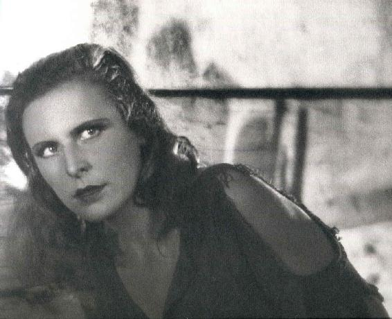
２ヒトラーに出会うまで
この『青の光』がその後の私の人生をこんなにも変えてしまうとは夢にも思わなかった事でした。
その後、私はアドルフ・ヒトラーという、とんでもない人間に出会う事になったからです。
そしてそのヒトラーがこの映画を大変に気に入り、私を絶賛したからなのでした。
ところで、新しい映画を制作している頃、私は撮影の合間を見つけて汽車の中などでヒトラーの『わが闘争』を読みふけっていました。
当時その本がドイツ国内で爆発的な大ベストセラーになっていたからです。
その後、私は他人に勧められるままに、ベルリンの巨大競技場で行われるヒトラーの演説を聴きに行く事になりました。
会場に入ると、林立するカギ十字の旗や何万もの制服姿の若者たちの中で、ちょうどヒトラーが演説を始めるところでした。
演説は最初、ヒトラーのしばらくの沈黙から始まりました。
会場の何万もの観客が固唾をのんで見守っています。
やがて彼の身体から吐き出される声や言葉が徐々に強まっていきます。
同時に観客たちの熱気もどんどん高まっていくのが私にも分かりました。
やがて両腕を震わせながらの彼の演説が絶好調に達します。
その時には、誰もがヒトラーの演説に酔いしれて観客全員が一つになり、会場は静かな恍惚状態のような雰囲気に包まれていました。
最後にはヒトラーの人々を圧倒するような言葉の機関銃でした。
会場は溢れんばかりの拍手に包まれ、後は全員の「ハイル・ヒトラー」の大合唱でした。
私は稲妻に撃たれたようでした。
ヒトラーは恐るべき天才だとその時、本当にそう思ったのです。
しかし、そのような思いは私だけに限らず、当時のドイツ国民の大多数が抱いた感情でもあったのです。
..............................
私はヒトラーに直接手紙を書きました。
私は思い込んだら直ちに行動に移す女でしたから...。
３二人だけの海辺散策
しばらくして、ヒトラーの副官から彼もあなたに会いたがっていると連絡がありました。
その時、ヒトラーは北海近郊の漁村ホルマーズィールに滞在していたのです。
あのヒトラーに会える...私は何と胸躍らせたことでしょう。
ベルリン駅から汽車に乗り込み、ホルマーズィールへと向かったのです。
現地に到着すると、私はナチ高官に付き添われ、初めてヒトラーの前に立ちました。
最初、私は非常に緊張しましたが、やがて妙に落ち着いた気分になっていったようです。
彼が意外に気さくな態度で私に語りかけてきたからです。
私たちは二人だけで海辺を散策しました。
ヒトラーは私の映画について話し始めました。
「私はあなたの映画は全部見ている。あなたが海辺で踊る『聖山』のシーンは美しく感動的だった。だけど、私が最も感動したのは最新作の『青の光』だろうな。あれを見た時、あなたには大変な才能があると実感したのだよ」
「ありがとうございます」
私は彼がそれぞれの映画の細部までこと細かに覚えていることにびっくりしました。
やっぱりすごい天才なのだと深く感動したのです。
こうしてお互いに色んな話をしているうちに、彼は唐突にこんなことを言い出しました。
「私たちが政権を取ったあかつきには、是非、あなたに私の映画を撮ってもらわねばなりませんね」
私はしばらく声が出ませんでした。
「私に果たして作れるでしょうか？」
「いや、あなただったら絶対できます」
彼は私にとても好感を持っているようでした。
目の前には北海の薄青い海が見渡せました。
浜辺には白い波が打ち寄せていました。
やがて、ヒトラーはおずおずと身を寄せて私の身体に腕を回しました。
...が、しばらくしてためらいながらその手を引っ込めました。
「私は今...自分の使命を貫徹するまでは女性を愛することはできないのです」
そう言ってから、ヒトラーは元の威厳ある顔に戻ろうとしているようでした。
この時の私の印象からすると、彼は元来、女には臆病な性質のようにも思えました。
今、人生を振り返ってみると、私はこの時のヒトラーの印象から一生脱け出すことが出来なかったのかも知れません。
後に彼の残酷さを何度となく知らされた時でも、威厳がありながらも超真面目な、この時の男の素顔しか私には浮かばなかったからです。
この海辺散策の次の日、彼はナチ専用機で私をハンブルクまで送り届けてくれました。
今か今かと私を待っていた映画撮影隊の仲間たちは、専用機から下り立った私を見てみんな非常にびっくりした顔でした。
私は山のような花束と大きな何枚ものヒトラー写真をしっかり抱えていたからです。
こうして、私はヒトラーという「親密で特別な友人」を持つことになったのでした。
やがてこの「親密で特別な友人」は私に特権的な地位をもたらしてくれることになります。
『ヒトラーの女』と周囲に思わせれば、いつだって映画に必要なものすべてが自由に手に入ることを知ったからです。
４パーティの後ヒトラーは...
１９３３年、高齢のヒンデンブルク大統領はヒトラーを首相に任命し、ワイマール体制が崩壊することになりました。
やがて議会は機能を停止し、ヒトラーは総統として全権限を掌握することになったのです。
ヒトラーは宣伝相としてゲッベルスを任命しました。
彼は女とみるや誰にでも手を出すような助兵衛男でしたが、とても頭の良い男でもありました。
そして何より、政治プロパガンダの天才だったのです。
第三帝国の巨大ワシ像やカギ十字旗を掲げての大行進、夜のたいまつと集団パフォーマンスなど、いずれも彼が考え出したイメージ戦略でした。
私は最初、そんなゲッべルスの下で仕事をすることになったのです。
ヒトラーとゲッべルス夫妻たちはパーティが大好きでした。
ある夜、私はヒトラーとゲッべルス夫妻と上流階級のハンフシュテングルを私のアトリエに招待したことがありました。
アトリエ内で一緒に食事をし、ビールで盛り上がった後、私はハンフシュテングルが演奏するピアノに合わせて踊り出したのです。
私はヒトラーの気を惹こうと一生懸命だったのでしょうか。
私はヒトラーと一緒に踊っていました。
しばらくしてゲッベルス夫妻とハンフシュテングルは気を利かし、その場を退散して行きました。
ヒトラーと私は二人きりになりました。
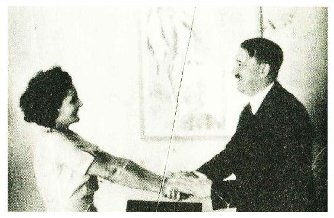
すると、彼はゆっくり芸術の話を始めたのです。
「私は本当は画家になりたくて二度もウィーンの美術大学を受けたのだ。しかしバカな教授どもが私の絵を理解できなくて、私を落としやがった」
彼はとても忌々しげな顔つきになりました。
「芸術とは究極的に完結した調和の美であるべきだ。世界のそして自然の理想的なかたちを創りだすことのはずだ」
彼は例によって、演説口調になり長々と話を続けました。
「それなのに頽廃したユダヤ人画家どもは、すぐに色も形も醜く崩して遊んでしまうのだ。...単にあいつらは絵が下手なだけなのに...」
彼は突然声を荒げたのです。
私たちの考えは完全に一致したのでした。
この演説が終わると、ヒトラーは私の身体に腕を回し私を愛撫しました。
しかし、この時もヒトラーと私の関係は「親密で特別な友人」以上には進まなかったのです。
５画家ヒトラーとの対話
その後も私たちは二人だけで会うことがよくありました。
いつだったか、彼は自分の描いた絵を見せてくれたのです。
細部まで非常に細かく描いた街なかの風景画が多かったのですが、中には漫画に似た人間のキャラクター画まであるのには、正直私はびっくりしました。
それぞれどれもとても几帳面に描かれていて上手な絵でした。
「私は今でも時々、絵を描くことがあるのだ」
ヒトラーはとても嬉しそうでした。
彼は私に隠し妻エヴァ・ブラウンのことを告白してくれたことがあります。
「あなただから言うけれど...エヴァは若くて私を一途に愛してくれる可愛い女だけれど、あいつは芸能人のゴシップ記事やファッションにしか興味のない女で、やっぱり物足りない」
「でも、もしあなたのように才能のある女と一緒になると、男は結局束縛されることになるだろう。私にはただ可愛くて私の思うままになるナイーヴな女でいいのだ」
ヒトラーは本音のところ、やっぱり女を怖がっている男なのかも知れないと、私には思えたのでした。
しばらく経ってから彼は急に怖い顔になり、こう付け加えたのです。
「エヴァの事は誰にも内緒だぞ」
ヒトラーはとても繊細な神経を持っていて、いつも感情が不安定な男でしたが、私と一緒に居ると心が落ち着くようでした。
いや、女ならだれでも一緒にいると心が安らぐ男だったかも知れません。
彼はなぜか、アウグスト・サンダーの写真の話をよくしました。
「あいつの写真は絶対に許せない...やたら人間の醜い姿をそのままに写したりするからね。あそこには人間の美も誇りも無い。それに比べたらあなたが撮る人間の肉体はいつも妥協がなく完璧で美しいね」
またも私たちは「美とは理想化してこそ美なのだ」という考えで一致したのでした。
それから、何時だったでしょうか...彼は唐突にこう言いました。
「弱いということは罪悪なのだ」
私は即座に同意しました。
６ナチ記録映画の監督に
しばらくして、ヒトラーはナチ党全国大会の記録映画を私に任せると言ってきました。
でも私は本当のところ、そんなドキュメンタリー映画じゃなくて、自分が主人公の劇映画を作りたかったのです。
でもこうしてヒトラーと知り合った今は、もうそんな事は許されなくなっていました。
彼は中世都市ニュルンベルク郊外に、何十万もの党員を集めるナチ党の大イベントを計画していたのです。
こんな重要なイベントの記録映画を、３２歳の女性監督の私に全て一任するというのは、ヒトラーの大英断でした。
彼は自分を神格化する映画づくりには、私が一番ふさわしいと確信したのでしょうか。
きっと映画『青の光』のように自分をロマンティックな映像と神話で飾って欲しかったのかも知れません。
こうして私は『信念の勝利』の制作に取り組むことになりました。
しかし、この撮影の時にゲッベルスから再三干渉が入りました。
ゲッベルスが映画など文化部門のボス、宣伝大臣なのですから、仕方がないのですが、例の助兵衛根性で私に迫って来たりするのですから堪りません。
私は最初に会った時からゲッベルスがどうしても好きになれなかったのです。
私は直接、ヒトラーにお願いする事にしたのです。
映画の制作責任をゲッベルスから切り離して、明確に私だけにしてほしいと懇願しました。
「確かにゲッベルスが間に入ると厄介な事になるのはよく分かる。私からゲッベルスにはっきり言っておこう」
こうして、ゲッベルスの邪魔がなくなりましたが、出来上がってきたフイルムを見ると、どれも演説、大集会、行進といった似たり寄ったりの材料ばかりでした。
それでも私は編集に全てをかけて何とか完成に持ち込みました。
確かに、この記録映画『信念の勝利』は親衛隊と党とヒトラーの礼賛には成功したように思います。
ナチのメディアは称賛一色でした。
しかし、わたし自身はこの映画の出来に不満足だったのです。
完成してみると、やはり私の未熟さが出ていたからでした。
１９３２年１２月のプレミア上映の時、私はヒトラー、ゲッベルス、突撃隊隊長レームと並んで特別席に座っていました。
ヒトラーはこの席で、次回の党大会の撮影も私に任せる事に決めたと告げました。
私は劇映画『低地』の制作を優先したかったのですが、ヒトラーの命令には逆らえませんでした。
こうして、私は第二回ニュルンベルク党大会『意志の勝利』も監督することになったのです。
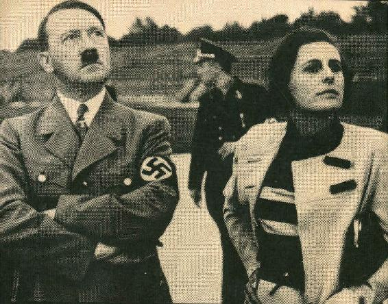
７ヒトラーの権力掌握の道
しかし、１９３４年の夏にナチ党の中で重大な事件が起きたようでした。
これからは戦後になって、私が多くの人々から知らされた情報です。
私は当時、政治には一切関係していなくて何も知らなかったのですから...。
ヒンデンブルク大統領は最高司令官として軍を掌握していましたが、彼が病に伏すとドイツ国軍の将軍たちはヒトラーが抱える突撃隊の存在が脅威になっていました。
突撃隊は悪名高い暴力集団だったようで、ヒトラーの権力掌握までは役立ったのだけれど、彼が政権の座に就いてからは、かえって危険な存在になったというのです。
おまけに突撃隊長のレームはヒトラーの入党以前からの親友でしたし、ヒトラーの指図に従うような男ではなかったと言います。
レームはむしろ突撃隊を国軍化しようという野心も抱いていたのです。
６月３０日の早朝、ヒトラーは部下を引き連れて、眠っているレームを襲いました。
ヒトラー自らが彼に銃口を突き付けて「逮捕する」と告げたそうです。
レームは二日後に銃殺され、その後もドイツ各地で突撃隊の幹部や政敵が狩り集められて射殺されました。
映画『信念の勝利』が突然お蔵入りになったのは、そのフイルムの中にヒトラーとレームが仲良く肩を組み合っているシーンが幾つもあったからです。
党大会一か月前の８月２日、ヒンデンブルク大統領は死去しました。
国民の多くはレーム事件の事も忘れ、大統領の死に静まり返ったのだそうです。
ヒトラーは大統領の称号でなく「総統」と名乗りました。
国軍の支持も取り付け、彼はこうしてすべての権力の掌握に成功したのです。
８映画『意志の勝利』をつくる
しかし、こうした事件の後は、ヒトラーこそが国を一つにまとめあげることが出来る、そして平和をもたらすことが出来る、という神話を新たに作り出す必要があったのでしょう。
ヒトラーにとって、そんな神話づくりには私の映画こそが最高の手段だったのでした。
..............................
１９３４年のニュルンベルク...私は１７０人もの制作スタッフで映画『意志の勝利』を撮影しました。
私はこれらの膨大な記録フイルムを前にして思案に暮れました。
これらの材料で私は面白い映画を作らなければならなかったからです。
私は連日連夜、一日に１８時間も編集室に閉じこもって仕事を続けたのですが、映画の冒頭シーンが決まらない事には、どうしても先に進めないのでした。
ある夕方、疲れ切って放心状態だった私は飛行機が降りるシーンでやろうと思いつきました。
ヒトラーの飛行機がニュルンベルクに降り立つ場面からイメージを膨らませると、私は自分でも胸が震えました。
冒頭シーンの構想が出来上がると、後は順調に作業が進んだのでした。
ヒトラーを乗せた飛行機がニュルンベルクの市街をかすめて到着し、熱烈な市民が歓迎するなかホテルまで行進する...そして夜が明けようとするニュルンベルクの町、民族衣装行列、演説会場での開会式、労働奉仕団のシュプレヒコール、夜のたいまつ行列や突撃隊やヒトラーユーゲントの集会などと編集していきました。
親衛隊の行進は緩急と強弱を織り込みながらリズミカルなものに組み立てれば良かったのです。
圧巻はルイトポルト・アレーナでの行進でした。
まずは顕彰記念碑から前方の記念壇へのロングショットで始めました。
それらは顕彰記念碑の鉤十字旗を支える支柱に取り付けられた小型エレベーターからの撮影で出来あがっていました。
巨大な空間を埋め尽くす１１万人の隊員が作る方陣の真ん中をヒムラーとルッツェを従えながらヒトラーが歩いていくのです。
ヒトラーが演壇上に立つと、カギ十字旗を持った突撃隊の旗手たちが演壇に向かって行進していく。
画面を埋め尽くして揺れ動く旗、旗、旗...。
空高くからカメラで見下ろす映像は圧倒的な視覚的ドラマを作り出せたように思います。
しかし後の世になって、この場面こそが私のナチ・プロパガンダの最も象徴的なシーンとして必ず取り上げられることになったのです。
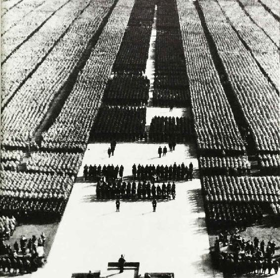
最後にはアドルフ・ヒトラー広場での閲兵式でした。
興奮が高まった閉会式でルドルフ・ヘスが高らかにうたい上げたのでした。
「ナチ党はヒトラーである。そしてヒトラーはドイツであり、ドイツはヒトラーである。ハイル・ヒトラー！ヒトラーに勝利を！」
ところで、この映画で私が編集で最も苦労したのは人々の動きと音楽をどう合わせるかでした。
最終的に、私が映画の一コマ一コマすべてを知り尽くしていましたから、自ら指揮棒をとって音楽の方をフイルム内の行進する男たちの動きに合わせることにしたのでした。
また私は徹底的に光と影のコントラストや構図にこだわりました。
私はこうした光と影のコントラストや構図でヒトラーを神のような偶像に仕立て上げることになったのですが、これはあくまでヒトラーの命令に従っただけの事でした。
映画を作る以上は出来る限り素晴らしい芸術作品に仕上げようとするのは、芸術家として当然の事ではないでしょうか。
でも本当はこの映画制作の途中で重大なクレームが付いたのです。
ドイツ国防軍の方から私の編集に大きな不満が噴出したからでした。
じつはこの大会中の国防軍の行進は、あいにく雨の中で撮影されたので、現像されてきたフイルムはどれもあまりに写りの悪いものでした。
私はフイルムを見て、それらのほとんどをカットしたのでした。
当然のことですが、国防軍の方からナチ党や親衛隊と同じ様に扱ってほしいと主張してきたのです。
ヒトラーは国防軍幹部と私を前にして、陸軍の行進をもう一度撮影し直したら...と提案しました。
「そんなことは出来ません。自分のフイルムを他人の指図で変えるようなことは私には出来ません」
私はいつも通り、ヒトラーの前でもはっきり自分を主張したのです。
すると、とても驚いた様子のヒトラーはじっと私の顔を見つめながら脅すような調子で言いました。
「あなたは誰に向かって話しているかを忘れているようだね...」
私は怖くなって急遽、ウーファ社が撮ったニュース映像を『意志の勝利』の中に挿入し、別に国防軍の短い映画を作ることにも同意したのでした。
９大成功のオリンピック映画「オリンピア」
私はつぎに１９３６年のベルリンオリンピック「オリンピア」の映画も任されました。
８月１日の開会式は壮観で、国立競技場は１１万人の大群衆でした。
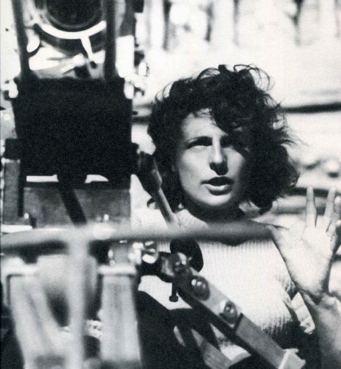
私の総指揮のもと、６人のカメラマンたちがスタジアム内で撮影をして、他の２６人のカメラマンは観客席や他の場所にもぐり込みました。
クレーン上から撮影したり、地下穴から撮影したり、トロッコ車や気球を使って撮影したり、そして水中からの移動撮影も行いました。
この映画では開発されたばかりの超望遠レンズが大変な威力を発揮してくれたように思います。
そうして撮影されたフイルムはなんと４０万メートル。
その映像の編集たるや地獄のような日々でした。
一年半、ガラス張りのラボラトリーに閉じこもりきりで、午前５時前に帰宅したことは一度だってなかったのです。
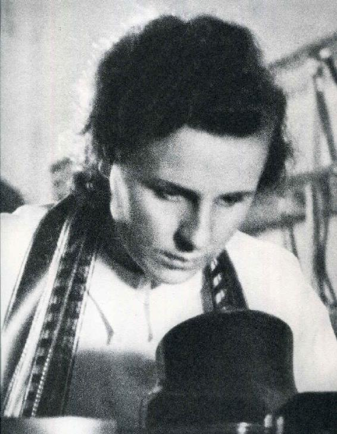
私は４０万メートルのフイルムを最終的に第一部「民族の祭典」３４２９メートル、第二部「美の祭典」２７２２メートルに編集しました。
大空をバックにギリシャ彫刻をまねたような男性の肉体映像は今でも有名ですが、特にダイビング・シーンには全精力を注ぎました。
ダイバーが跳び板の上でポーズをとり、跳躍し、空に舞って、水中に潜っていく。
カメラもダイバーと共に落下し、彼の水中での優美な舞いを追い続けながら、やがて再び彼と一緒に水上に浮かび上がって来るのです。
このダイバーたちが空中で舞うシーンは、スローモーションや露出不足や重ね焼きなど色々な映像効果を用いて、繰り返し表現しました。
これらのシーンはその後の映画撮影技術に、大変な影響を与えたと私は自負しています。
こうして「オリンピア」は世紀の芸術映画になったのです。
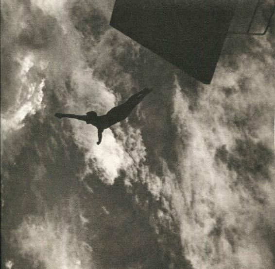
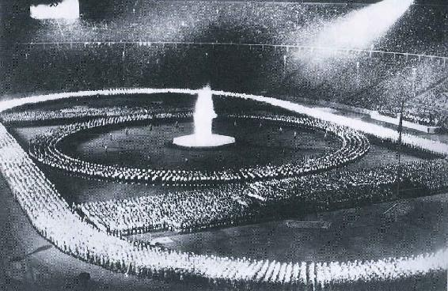
１０ヒトラー周辺の男や女たち
ところで突然、話は変わるのですが、私は自分の容貌にも肉体にも自信がありました。
惚れっぽい性格でもありました。
いつも華やかな舞台を歩いてきたからでしょうか...男を惹きつけるようなところがあったのかも知れません。
...男たちが次々と私に近づいてきたのです。
人気スターのトレンカーは色男で、長い間私と同居しましたが、やがてケンカ別れになりました。
彼はその後ヒトラーの怒りを買って、監視され続ける身となってしまったようです。
映画プロジューサーのゾーカルと愛し合ったこともありますし、カメラマンのシュネーベルガーとはよく一緒にスキーに出かけたものです。
しかし、私が飛行機操縦士のウーデットとも仲良くなると、シュネーベルガーはウーデットの自由奔放な生き方を見習おうと私から去っていきました。
ウーデットの方はと言えば、私との恋仲をヒトラーに密告されて、１９４１年にピストル自殺しました。
私はこうして多くの男たちを愛しましたが、強情で意地っ張りな性格だったからでしょうか...恋人と同居してみると、なぜかいつもすぐ喧嘩別れになってしまうのでした。
だけどヒトラーの場合は別でした。
ヒトラーは私を必要としましたし、同時に私もヒトラーが必要だったのです。
実はヒトラーにはたくさんの愛人たちがいました。
そんな中で私は彼の「親密で特別な友人」に過ぎなかったのです。
...........................
１６歳のマリア・ライターは３７歳のヒトラーから直接デートに誘われて舞い上がり、ナチ党の党集会にまで招待される仲になりました。
何通かの手紙のやり取りの後、ヒトラーの新居にまで出かけるくらい彼に惚れ込んでしまったのです。
マリアは１９３４年、帝国宰相のヒトラーを訪れて、「結婚して子供を持ちたい」と言ったので、ヒトラーは激怒して追い返してしまいました。
その後、彼女は親衛隊の一人と結婚させられたのですが、一生、ヒトラーの精神的な呪縛から逃れることは出来ず、不幸な結婚生活を送ることになったのでした。
ユニティ・ミットフォードはイギリス貴族・ㇾーデスディル卿の令嬢でした。
ナチ党に心酔した彼女はヒトラーに会いたい一心で、無謀にもミュンヘンの党本部まで出かけたのでした。
面会は許されなかったのですが、党大会会場で他の４０万人と一緒にヒトラーの大行進を見る事になりました。
彼女はあまりに感激して失神しそうなくらいだったのです。
彼女はその後何度も手紙を出し、ヒトラー行きつけのレストランにも出かけました。
やがてヒトラーとの面談も許され、やがて多くの公式の場で来賓としてヒトラーと並んで演壇上に立つまでになりました。
ベルリンのオペラ舞踏会や帝国総理府のレセプションにも出席出来て、一番人目を惹く女でもありました。
世界漫遊者のように暮らして、車は左にユニオンジャック、右にハーケンクロイツを飾った車でヨーロッパ中にナチの宣伝をして回ったのです。
彼女は英独連合が成立し欧州に平和なユートピアが実現すると夢想して、ミュンヘンに永住する事まで決めたのですが、数か月後にはヒトラーからイギリスと戦争になると告げられたのです。
９月３日、イギリスはドイツに宣戦布告しました。
イギリスの両親からはすぐに帰国するようにとの電報が入ったのですが、彼女は別離の手紙を書きました。
...「たった今電報を受け取って戦争になった事を知りました。わが総統に対する忠誠心と英国人としての私の義務の間に私は引き裂かれてしまいました。私の命はもう何の価値もありません。ここでさよならを言わせてもらいます。ハイル・ヒトラー！」...
彼女は公園のベンチに腰を下ろし、ポケットから取り出したピストルを右のこめかみに当て撃ちました。
しかし、弾丸は彼女の頭蓋骨の後部に留まったままでした。
そのまま頭を動かす事の出来ない彼女は顔全体が落ち窪んだ中に濃いブルーの目が二つ見えるだけになったと聞きます。
髪はフェルト状にもつれ、歯は黄色だったそうです。
英国に帰国した半身麻痺の「ナチ少女」はそのまま朦朧状態で生き続け、数年後、留まっていた弾丸が動いて死にました。
ヒトラーの異母姉の娘ゲリ・ラウバルも愛されて叔父が購入した家に特別な一室を与えられて住みました。
しかしゲリがヒトラーの若い運転手と恋仲になると、運転手を追放し、ウィーンの若い男と結婚しようとすると、外出禁止にして監視をつけ束縛しました。
自由を奪われたゲリは結局ヒトラーの部屋から盗み出したピストルで自殺しました。
エヴァ・ブラウンは、ヒトラーが隠し続けた愛人でした。
華やかな公けの舞台でヒトラーが私たちを集めて歓談する時でも、彼女は絶対に人前に現れないように管理されていたのです。
日陰の身である彼女は、惨めな身の上を嘆き二度も自殺未遂をしましたが、やはりヒトラーの命令に従いました。
最後に彼女が念願の「結婚」をなし遂げて、晴れてエヴァ・ヒトラーになれたのは、ベルリン陥落直前の地下壕の中だったのです。
形だけの結婚式を終えると、エヴァは青酸を飲みヒトラーは右の額に拳銃を撃ち込んで自決しました。
二つの死骸は中庭に運ばれてコンクリートミキサーに入れられたそうです。
親衛隊員がそこにガソリンを注ぎ火の付いた布切れを投げると、30分後には二人とも見分けがつかなくなりました。
炭化した残骸は爆弾孔に埋められたといいます。
このように女たちの多くは男の存在が自分たちの人生の中心でした。
だから男の支配下に自分の身を置く事で満足し、いつも男の愛を願いました。
しかし、ヒトラーは最終的には必ず女との間に距離を置いて近づかせなかったのです。
彼がエヴァ・ブラウンと結婚したのは、すべてを諦め自殺を決めたからなのです。
彼が女たちとの恋愛や結婚を拒否し続けたのは、すべてに政治や権力の維持を優先させたからなのか、それとも単に彼が性不能者だったからなのか、あるいは少女愛者だったからなのか...私には分かりません。
ヒトラーは私にこう言いました。
「女と結婚するなら、賢くない女の方が良い。女に支配されるようになったら、もうおしまいだからな」
じっさい、ヒトラーが求めた女は極端に若くて美しく肉感的であればよかったのです。
ゲリ・ラウバルもエヴァ・ブラウンもマリア・ライターもユニティ・ミットフォードも若き日のヘンリエッテ・ホフマンも、みんな何も分からない純粋で無垢な１０代か２０歳の女の子だったのです。
もともと女性に晩生のヒトラーは自分の意のままになる可愛い女の子を求めただけなのです。
私が見る限りでは、女性に不器用だったし女性を恐れている風にも見えました。
ひょっとしたら、単なる性不能者だったのかも知れません。
しかし、このためにヒトラーの周囲の女たちは悲劇的な生涯を送りました。
一方、ヒトラーの周りにいた男たちは権力闘争に明け暮れました。
政治的な利害対立やイデオロギー抗争は私にはよく分かりません。
ただ結局は、男たちの多くも悲惨で惨めな人生を送ることになったのです。
..............................
でも私だけは例外でした。
私はいつも自立していましたし、ヒトラーの前でも自由にモノが言えました。
そう言えばただ一度...『意志の勝利』で彼の要請を拒否した時には、私も怖い思いをしてヒトラーに従いましたけれど...。
「生きている限り、他人に頼らなければ生きられないような、そんな人間にだけはならない。決断は常に自分でする」
私は父から...こんな意志の粘り強さと頑固さを受け継いでいたのです。
１１ヒトラーとの最後の出会い
１９４４年、私はしばらく前から同棲していたペーター・ヤーコプとキッツビューエルという村で結婚式を挙げることになりました。
まだ戦争の真最中で、しかも戦局はどんどん悪化していたのでしょうが、私はやはり戦争のことも政治のことも何も分かりませんでした。
そしてこんなドイツの片田舎では戦争の匂いすら感じることができませんでした。
私はこんな時でも新しい劇映画制作のことしか考えていなかったのです。
そんななか、ペーター・ヤーコプとの愛の日々は私に久しぶりの慰安をもたらしてくれたようでした。
しかし、このヤーコプとも一年後にはケンカ別れすることになったのですが、この時はまだ私たちはアツアツの仲だったのです。
結婚式の直後のことだったでしょうか。
ヒトラーからどうしても新郎に会いたいと連絡が入りました。
私は新郎のヤーコプと一緒にベルヒテスガーデンまでヒトラーに会いに行ったのです。
でも、その時の彼は本当にもう最悪でした。
すでに酒に酔っぱらった彼は例によって私たちの前で延々と大言壮語の演説を始めました。
最初は演説の言葉もしっかりしていたのですが、やがて、その言葉はイタリアやイギリスへの激しい怒りの口調へと変わっていきました。
そしていつの間にか演説の言葉も支離滅裂でした。
充血した彼の目は落ち着きがなく手も震え続け、演説はただの怒鳴り声だけになっていたのです。
黒紫にくすんだぶくぶくの唇の端からはヨダレも垂れていました。
最後にはよろよろと両脚がくずれ、片肘をかけたままのテーブルを押し倒しながら、そこにだらしなく倒れ込んでしまったのです。
しばらく見ぬ間に、こんなに老け込んだヒトラーを見るようになるとは...
あの最初に出会った時のヒトラーのオーラはすでにここにはありませんでした。
今後もう二度と彼と会うことはないのでは...とその時、私は直感しました。
じっさい、これが私のヒトラーとの最後の出会いになったのです。
１２戦後を生き延びる
第二次大戦後、私は土地も家も工房も財産もすべて失い、映画監督としての道も絶たれ、投獄されもしました。
しかし、私はナチの同調者ではあったけれど、ナチ党員でも何でもありませんでした。
私には政治的なことは一切分かりませんでしたし、ユダヤ人大虐殺なぞあの当時知るすべもありませんでした。
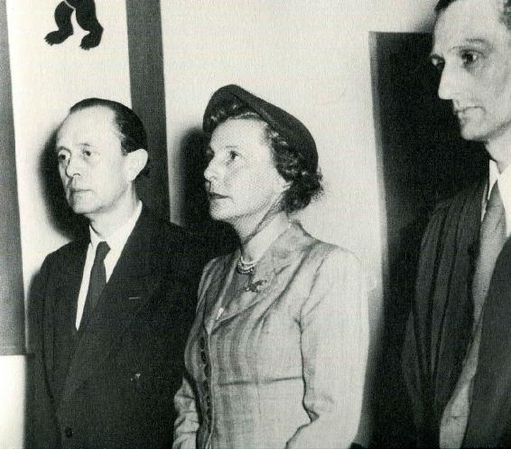
また、私はヒトラーやナチ党幹部のような民族差別主義者ではなかったのです。
もし疑われるなら「オリンピア」の映像を見てもらえれば分かることでしょう。
私はトラック競技の黒人選手オウエンスやマラソンの日本国籍の韓国人選手の映像をドイツ選手以上に優遇しました。
黒人選手を大写しにした時などは、ヒトラーは目を背けていたくらいなのですから...
それでも戦後、私は様々な人々から何度も何度もユダヤ人収容所や大虐殺の写真を見せつけられたのです。
「お前はヒトラーの前で、裸で踊っただろう」なんて馬鹿げたことも言われました。
しかし、これははっきりと言わねばなりません。
私はヒトラーを敬愛はしていましたが、決して彼の愛人でも何でもなかったのです。
じっさい、あの当時のドイツでは９０パーセント以上の国民がヒトラーを支持していたのです。
私はユダヤ人収容所や大虐殺は全く知りませんでしたし、男たちの権力闘争も分かりませんでした。
ただ、映画作りの使命を与えられた以上は、必死に努力して出来る限り最高の作品を作る...芸術家なら当然の事をやっただけなのです。
じっさい、『意志の勝利』はベネチア映画祭で金賞、フランスではグランプリを勝ち取ったではありませんか。
これこそ、この映画が単なるプロパガンダ映画でなかった証拠なのです。
ただ『ヒトラーの女』と呼ばれることは、私の威信に役立ちましたし、思い通りの映画作りが出来たのです。
だから、『ヒトラーの女』と呼ばれることに従っただけなのです。
『ヒトラーの女』とはあの厳しいナチ体制のドイツで、私が芸術家として生き延びるためにはどうしても必要な手段だったのですから...。
第二次大戦後、私が長い、長い空白の時間を経て...
６３歳でヌバ族の写真集「The Last of the Nuba」を発表したのも...
７０歳でスキューバダイビングを始めたのも...
７６歳で「Coral Garden」という写真集を出したのも...
１００歳で映画「Wonder Under Water」を完成させたのも...
戦後、中傷され誹謗され続けたことに対する、芸術家としての私の意地であり、私のプライドでもあったのです。
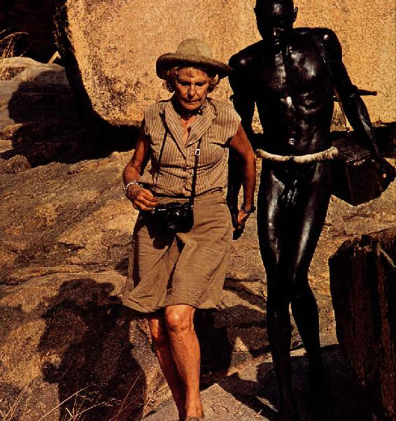
最後に、私よりひとつだけ年上で、同じベルリン生まれの女優、マレーネ・デートリッヒのことも話したいと思います。
彼女はヒトラーの誘いをきっぱり断って、ハリウッドに亡命し、反ナチを訴え続けました。
デートリッヒを絶賛する人々は決まって、彼女と私を比較しながら私の道義的責任を問い詰めます。
でも、彼女がヒトラーの誘いを拒否できたのは、すでに『嘆きの天使』で世界的スターになっていたからですし、アメリカにスタンバーグ監督という庇護者もいたからなのです。
私から言わせてもらうと、彼女は母国ドイツを捨て、敵国兵士たちの前で『リリー・マルレーン』を歌った裏切り者でもあります。
退廃美を売り物にセックスシンボル女優として空前の人気を得ただけなのです。
しかし、私にはどんな庇護者もいなかったし、母国に留まらざるを得ませんでした。
私はヒトラーとナチに協力するように強制されたのです。
そんな過酷な状況の中で、私はいかに優れた芸術作品を創るかに自分のすべてのエネルギーを注ぎました。
ヒトラーの命令を拒めば私がどのようになっていたか...私のこの話を聞いて下さった皆さんには分かってもらえた事と思います。
私にはナチ協力者の責任はありません。
断じてナチ協力の責任なんかはないのです。
私は......私は無実です。
私は無実なのです。
......これはフィクションです。......
◎参考文献◎
レニ・リーフェンシュタール G・B・インフィールド 喜多迅鷹・喜多元子 1981リブロポート
革命と戦争と恋（歴史をつくる女たち７） 石岡瑛子 1983 集英社
LENI RIEFENSTAHL LIFE 石岡瑛子、伊藤俊治、椛島則子 1992 求龍堂
レニ・リーフェンシュタール 平井正 1999 晶文社
美の魔力レーニ・リーフェンシュタールの真実 瀬川裕司 2001 パンドラ
レーニ・リーフェンシュタール 美の誘惑者 ライナー・ロイター 瀬川裕司訳 2002 青土社
レニ・リーフェンシュタールの嘘と真実 スティーヴン・バック 野中邦子訳 2009 清流出版
ヒトラーをめぐる女性たち ヘンリエッテ・v・シーラッハ S.村木眞寿美訳1985 三修社
ヒトラーをめぐる女たち エーリッヒ・シャーケ 渡辺一男訳 2002 ティビーエス・ブリタニカ
後付け
私はヒトラーの女だった？
（101歳まで生きたナチ映画の美人監督）
―アーティストラブ３―
発行 2018年12月24日 第１版発行
著者 角間貴生（かくまたかお）
Copyright Takao Kakuma 2018
発行所 出版工房ゆめらいふ
〒福岡県福岡市南区老司５－５－２０
Email:yumelife@outlook.jp